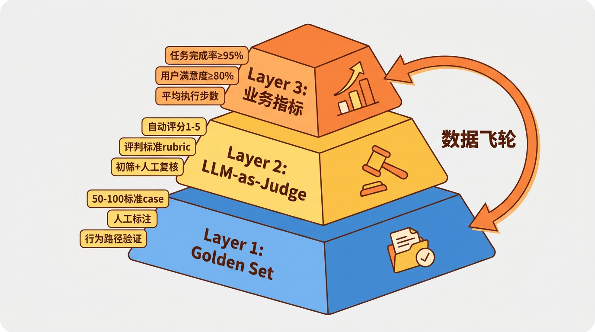
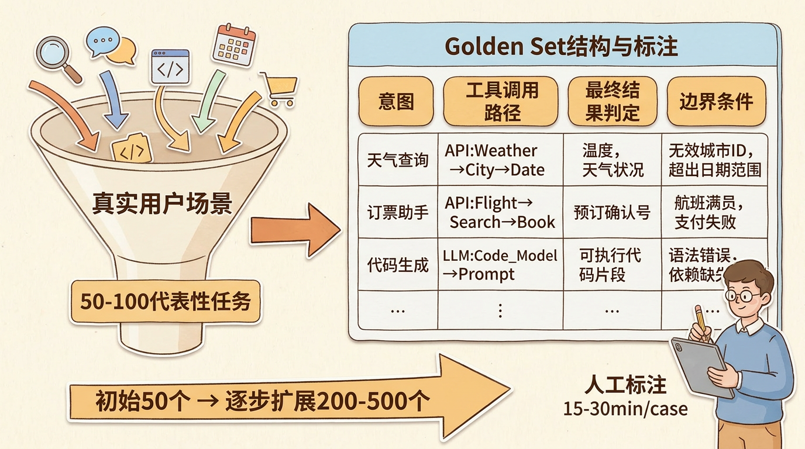
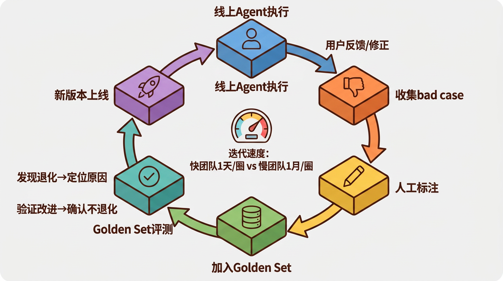
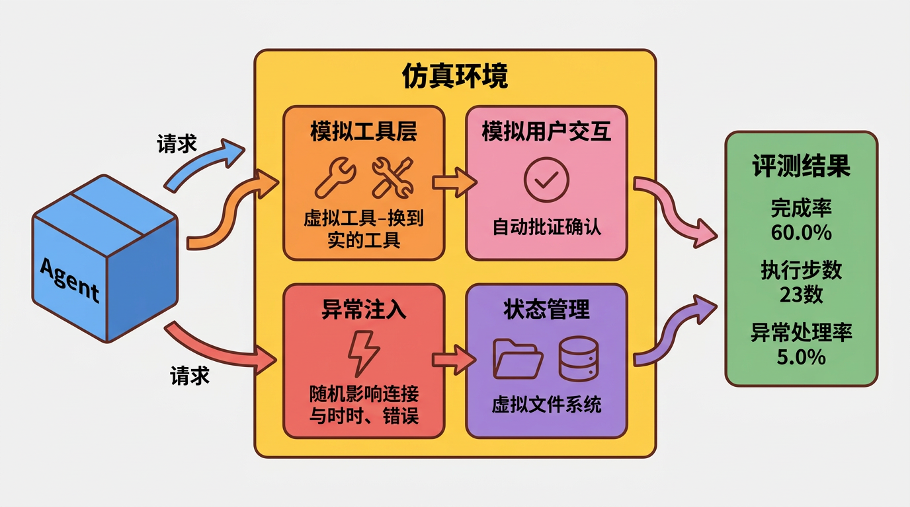

Agent评测：从Golden Set到业务指标
很多人觉得Agent评测就是”写几个测试用例，跑一下看结果对不对”。和单元测试有些相似，但本质不同。
但Agent的行为是非确定性的——同样的输入，今天能过明天可能就不过了。你改了一个Prompt的措辞，或者LLM provider悄悄更新了模型，Agent的行为就可能漂移。
你需要的不是”通过/不通过”的二值判断，而是一套能持续度量质量、定位退化、驱动迭代的评测体系。
为什么Agent评测难
原因有三，且个个棘手。
1. 非确定性
传统软件测试的假设是：输入确定 → 输出确定。断言add(2, 3) == 5永远成立。
但Agent并非如此。同一个用户请求”帮我检查这片森林有没有火灾”，Agent今天可能规划15步完成，明天可能规划18步。路径不同，但结果可能都是对的。如何编写断言就成了难题。
2. 长链路
一个Agent任务可能涉及20-50步工具调用。每一步都可能出错，中间任何一步失败都会影响最终结果。
假设每步的成功率是99%，50步的端到端成功率是 0.99^50 ≈ 60.5%。换言之，即使单步成功率极高，长链路任务的端到端成功率也仅约六成。
3. 评价标准模糊
“帮我订一张去上海的机票”——什么算评测通过？
- 找到了航班并展示？✓
- 完成了预订？✓✓
- 选了最便宜的？✓✓✓
- 选了最便宜且时间最合适的？✓✓✓✓
评价标准不是非黑即白，是分层次的。
评测体系的三层模型

Layer 1: Golden Set（基线）
Golden Set是你精心标注的标准测试集。它是评测的锚点。

怎么建？
- 从真实用户场景中提取50-100个代表性任务
- 每个任务标注期望的行为（不是期望的输出，而是期望的行为路径）
- 人工验证每个标注的正确性
标注什么？
| 维度 | 标注内容 | 示例 |
|---|---|---|
| 意图 | 用户真实意图 | “看有没有火灾” → 巡检+异常检测 |
| 工具调用 | 应该调用哪些工具 | take_off → fly_to → take_photo → detect_fire |
| 最终结果 | 任务完成的判定标准 | 发现火灾→报警，未发现→生成报告 |
| 边界条件 | 异常处理 | 目标区域不可达时怎么办 |
规模建议：
- 初始50个case，覆盖核心场景
- 逐步扩展到200-500个，覆盖长尾场景
- 每个case标注耗时约15-30分钟
Layer 2: LLM-as-Judge（自动化）
Golden Set的问题是需要人工判断”Agent做得对不对”。这在大规模评测中不可持续。
解法：让LLM评判LLM的输出。
具体方法：
1 | 输入给Judge LLM： |
准确率如何？
研究表明，GPT-4作为Judge与人工评判在pairwise比较场景下的一致性约80%[^1]。不完美，但已经可以作为高效的初筛工具——LLM Judge标出可能有问题的case，再人工复核。
Judge的Prompt设计很关键。一个不好的Judge Prompt会导致系统性偏差。比如：
1 | # 差的Judge Prompt |
Layer 3: 业务指标（线上）
Golden Set和LLM Judge是离线评测。线上需要看业务指标：
| 指标 | 定义 | 目标 |
|---|---|---|
| 任务完成率 | Agent完整执行任务的比例 | ≥ 95% |
| 用户满意度 | 用户给正面反馈的比例 | ≥ 80% |
| 平均执行步数 | 完成一次任务的工具调用次数 | 越少越好 |
| 平均耗时 | 从用户发起到任务完成的时间 | 取决于任务类型 |
| React兜底率 | 触发ReAct（Reasoning+Acting）异常兜底机制的比例 | ≤ 10% |
| 修正率 | 用户在Agent完成后手动修正的比例 | ≤ 15% |
这些指标和Golden Set怎么联动？
线上发现bad case → 标注 → 补充到Golden Set → 下一代模型/Prompt改进 → Golden Set验证不退化 → 上线。这就是数据飞轮——通过线上问题持续补充测试集、驱动模型改进的闭环机制。

仿真环境
真机测试成本高、周期长，因此需要搭建仿真环境来运行评测。

仿真 ≠ Mock
很多人把仿真等同于Mock。区别：
| 维度 | Mock | 仿真 |
|---|---|---|
| 工具行为 | 固定返回预设值 | 模拟真实行为（有延迟、有失败、有边界条件） |
| 环境状态 | 无状态 | 维护状态（文件系统、数据库） |
| 异常模拟 | 手动触发 | 随机注入（网络超时、工具报错） |
| 成本 | 零 | 有（需要计算资源） |
仿真的目标是尽量接近真实环境。一个只返回成功结果的Mock，和真实的Agent执行环境差太远了。
搭建思路
- 模拟工具层：把真实工具替换为模拟版本，但保持相同的接口
- 模拟用户交互：人机协同（Human-in-the-Loop）的确认步骤自动模拟（根据场景自动选择”确认”或”取消”）
- 异常注入：按概率注入超时、错误、异常响应
- 状态管理：维护一个虚拟的环境状态（文件、数据库、外部服务状态）
成本计算
用本地GPU（如RTX 5090）跑小模型做评测：
| 方案 | 每次评测成本 | 100个case成本 |
|---|---|---|
| 调API（Claude Opus） | ~$0.50 | ~$50 |
| 调API（Claude Haiku） | ~$0.02 | ~$2 |
| 本地小模型（5090） | ~$0.001（电费） | ~$0.10 |
本地方案的代价是准确率略低，但对Golden Set基线评测来说已经够用。
数据飞轮
评测体系的终极目标是建立数据飞轮：
这个飞轮转一圈的速度，决定了你的Agent迭代速度。快的团队一天转一圈，慢的团队一个月转一圈。差距就是这么拉开的。
评测即上线门禁
评测不是”做完了测一下”，而是上线门禁。
每次发版前：
- 跑完整Golden Set
- 端到端完成率 ≥ 95%（红线，不达标不放行）
- 无新增退化case（可以有改善的case，但不能有变差的）
- LLM Judge平均分不低于上个版本
不通过就卡住。和CI/CD集成，自动化执行。
这并非理想主义，而是工程纪律。缺乏门禁的Agent系统上线，风险极高——小概率事件一旦发生，后果严重。
参考资料
Zheng et al., “Judging LLM-as-a-Judge with MT-Bench and Chatbot Arena”, NeurIPS 2023